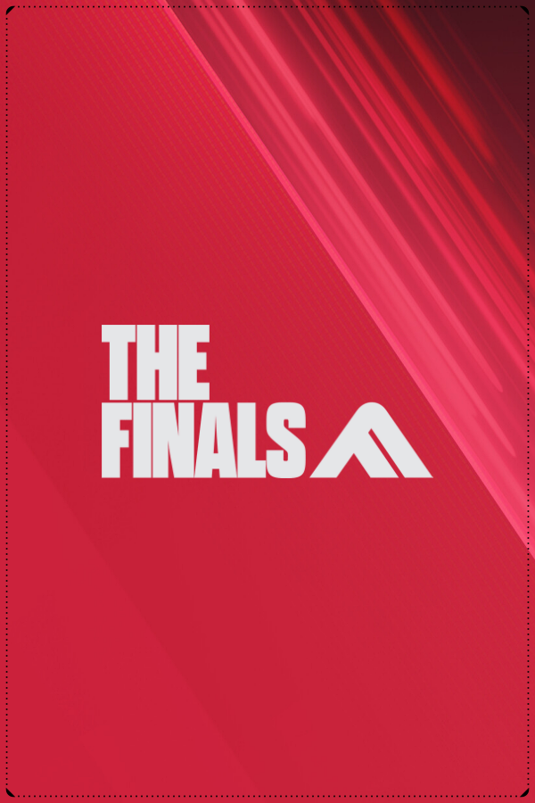

03 / VIDEOGIOCHI
Videogiochi.
Storie, esplorazione, cooperazione e competizione: una selezione dei titoli che hanno lasciato il segno e di quelli in rotazione.
apri il profilo Steam ↗
VIDEO / TRAILER
THE FINALS — PLAYER REEL01 / PREFERENZE
Titoli
preferiti.
Una selezione personale
di mondi e storie.
NIGHT IN THE WOODS
Atmosfera, personaggi e una storia indie da ricordare.
OUTER WILDS
Esplorazione, misteri e curiosità senza una strada già scritta.
THE FINALS PREFERITO ATTUALE
Competizione, squadre e arene che cambiano continuamente.
LETHAL COMPANY
Cooperazione, tensione e situazioni imprevedibili.
VOICES OF THE VOID
Atmosfera, segnali e inquietudine nello spazio.
02 / ROTAZIONE PERSONALE
In
rotazione.
I giochi che sto
seguendo in questo periodo.
nel profilo
da Steam
pubblico
TOTAL PLAYTIME / STEAM API
N/D ore
Imposta STEAM_API_KEY nelle Actions della repository per calcolare il totale del profilo.
LOCKED
03 / ATTIVITÀ RECENTE
aggiornato automaticamente da SteamTHE FINALS
Competitive FPS / destruction — attività recente dal profilo Steam.
GENRE SIGNAL